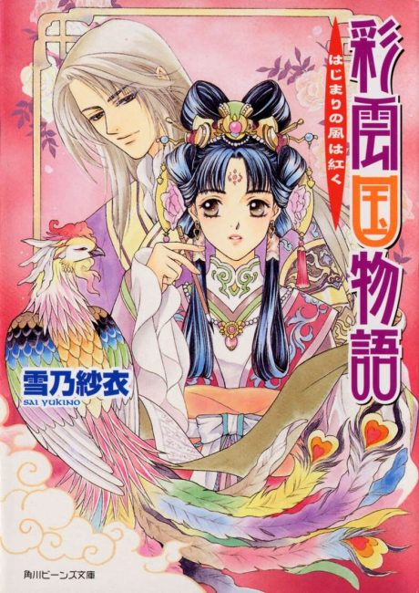

Anime
Anime
Light novelThe Story of Saiunkoku
彩雲国物語
The anime takes the story to Unclear.
7.3AniList
—Animeter
78 ep2 seasons
Anime finished. Where does the story go next?
StatusNo source yet
We looked for where the anime ends in the light novel but found no source we trust yet. The light novel is 23 volumes, finished.